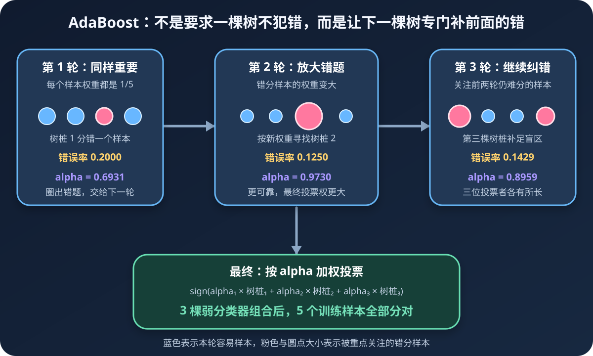
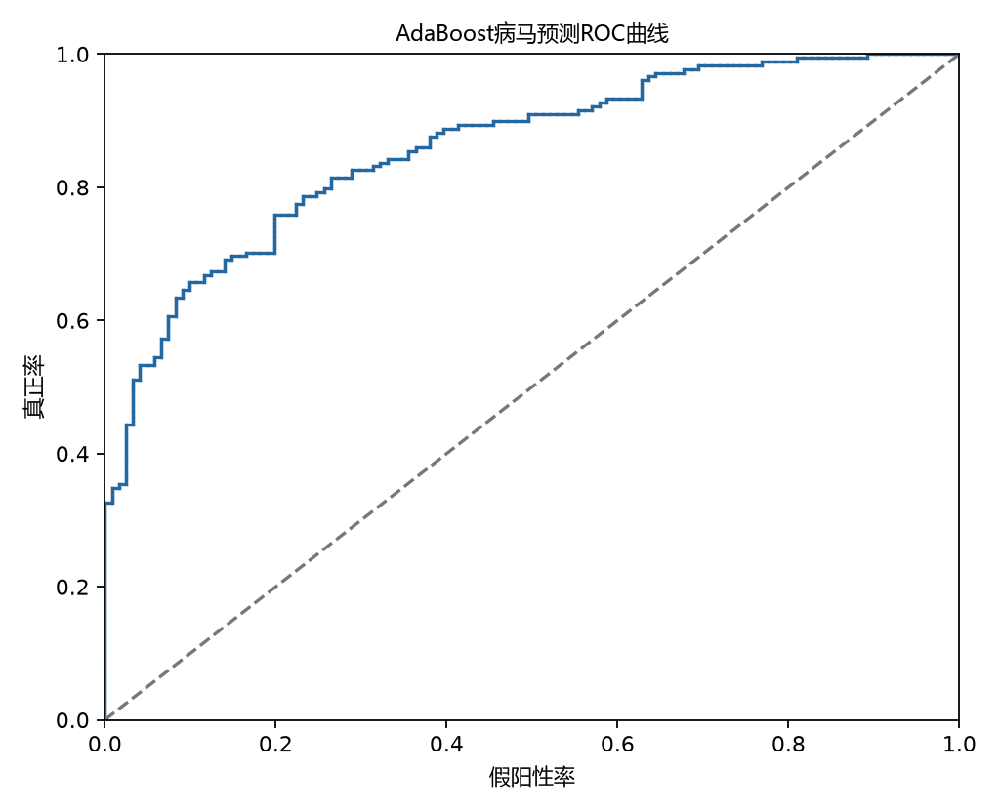

第五周完成了《机器学习实战》第 7 章 AdaBoost 的源码复现。从 5 个简单样本开始，我先寻找一棵只有一个判断条件的决策树桩，再调整样本权重、训练下一棵树，最后让多棵树按可靠程度加权投票。这个过程把“集成学习”从一句抽象定义，变成了一套可以逐行跟踪的纠错机制。
这篇复盘会讲清楚
- 一棵只会问一个问题的树桩怎样分类
- 错分样本为什么会在下一轮变得更重要
- alpha 怎样决定每棵弱分类器的投票权
- 病马预测、ROC 和 AUC 的结果应该怎样解读
一、本周技术主线：让错误成为下一轮的教材
AdaBoost 的全称是 Adaptive Boosting，可以翻译为“自适应提升”。它不要求一次训练出一个非常复杂、非常强的模型，而是反复训练多个能力一般的弱分类器：
- 第一轮让所有训练样本同样重要。
- 找到当前加权错误率最低的弱分类器。
- 提高被分错样本的权重，降低被分对样本的相对权重。
- 下一轮重点处理上一轮的难题。
- 最终让所有弱分类器按可靠程度加权投票。

一个弱分类器负责解决一部分问题；被它忽略的难题，会被下一位分类器放大并重新学习。
二、弱分类器有多弱：只问一个问题
本章使用的弱分类器是单层决策树，也叫决策树桩。它不像普通决策树那样连续分裂，而是只选择：
- 一个特征。
- 一个阈值。
- 一个不等号方向。
例如：
如果第 0 个特征 ≤ 1.3，就预测为 −1；否则预测为 +1。
实现只需要生成一列初始为 +1 的结果，再按条件把一部分改成 −1：
def stump_classify(data, feature_index, threshold, inequality):
predictions = np.ones((len(data), 1))
if inequality == "lt":
predictions[data[:, feature_index] <= threshold] = -1.0
else:
predictions[data[:, feature_index] > threshold] = -1.0
return predictions它表达能力有限，却有两个优点：训练快，而且每条规则都能直接读懂。AdaBoost 要做的，就是把多条这种简单规则组合起来。
三、第一棵树桩是怎样找到的
简单数据集只有 5 个二维样本：
| 样本 | 特征 0 | 特征 1 | 标签 |
|---|---|---|---|
| 1 | 1.0 | 2.1 | +1 |
| 2 | 2.0 | 1.1 | +1 |
| 3 | 1.3 | 1.0 | −1 |
| 4 | 1.0 | 1.0 | −1 |
| 5 | 2.0 | 1.0 | +1 |
训练函数遍历每个特征、若干候选阈值以及 lt/gt 两种方向。第一轮所有样本权重相同，都是 1/5，因此分错任何一个样本都增加 0.2 的错误。
实际找到的第一棵最佳树桩为：
特征下标：0
阈值：1.3
判断方向：小于等于阈值时预测为 -1
加权错误率：0.2000
预测结果：[-1, +1, -1, -1, +1]第一条样本真实标签为 +1，却被预测为 −1，所以这棵树桩分错了 1 个样本。AdaBoost 不会把它丢掉，而是把这次错误变成下一轮的训练重点。
四、普通错误率为什么不够
如果每轮都只计算“错了几个”，后面的分类器仍会用相同方式看待所有数据，就谈不上重点纠错。AdaBoost 为每个样本维护一个权重 Dᵢ：
加权错误率 ε = Σ Dᵢ × [预测ᵢ ≠ 标签ᵢ]
方括号内的判断分错时为 1，分对时为 0。于是：
- 高权重样本分错，会带来很大的加权错误。
- 低权重样本分错，对当前树桩评分影响较小。
- 寻找“最佳树桩”，实际是在当前权重分布下找加权错误率最低的规则。
errors = np.ones((sample_count, 1))
errors[predictions == labels] = 0
weighted_error = float(D.T @ errors)同一组数据在不同轮次拥有不同的 D，因此每轮选出的最佳树桩也可能不同。这就是“自适应”的具体含义。
五、alpha：分类器说话的分量
每棵树桩还有一个权重 alpha，它决定最终投票时有多少话语权：
alpha = 0.5 × ln[(1 − ε) ÷ ε]
先从结果理解公式：
- 错误率小于 0.5，
alpha为正，分类器比随机猜测可靠。 - 错误率越小，
(1−ε)/ε越大，alpha越大。 - 错误率接近 0.5，
alpha接近 0，几乎没有投票价值。 - 错误率大于 0.5，
alpha为负，说明判断方向还不如反过来。
第一棵树桩的错误率为 0.2：
alpha = 0.5 × ln(0.8 ÷ 0.2) = 0.6931
第二棵树桩的加权错误率为 0.125，因此 alpha = 0.9730，比第一棵更大。它在当前难题分布上更可靠，最终投票时声音也更响。
六、为什么错分样本会变重
样本权重的更新公式是本周最难理解的地方：
Dᵢ ← Dᵢ × exp(−alpha × yᵢ × hᵢ) ÷ Z
这里 yᵢ 是真实标签，hᵢ 是树桩预测，两者都只能是 +1 或 −1。把情况拆开后，指数公式就不再神秘：
预测正确
yᵢ × hᵢ = +1，权重乘以 exp(−alpha)，相对变小。
预测错误
yᵢ × hᵢ = −1，权重乘以 exp(+alpha)，相对变大。
Z 是归一化因子，让更新后的所有权重重新加起来等于 1。它不会改变样本之间谁大谁小，只是把权重拉回统一尺度。
exponent = -alpha * true_labels * stump_predictions
D = D * np.exp(exponent)
D = D / D.sum()指数函数带来对称效果：分对的样本按 e⁻ᵅ 缩小，分错的样本按 eᵅ 放大。alpha 越大的可靠分类器，它的对错对下一轮影响也越强。
七、三轮训练：弱分类器怎样变强
简单数据的真实训练过程为：
| 轮次 | 树桩加权错误率 | alpha | 组合训练错误率 |
|---|---|---|---|
| 1 | 0.2000 | 0.6931 | 0.2000 |
| 2 | 0.1250 | 0.9730 | 0.2000 |
| 3 | 0.1429 | 0.8959 | 0.0000 |
这里有一个容易误读的地方：第二、三棵树桩的错误率是按照当轮样本权重计算的，不能简单理解成“5 个样本错了 12.5%”。权重已经不再平均。
单独看，每棵树桩都没有把所有样本分对；三棵树按 alpha 加权投票后，组合训练错误率降到 0。代码检测到全部训练样本分类正确，就提前结束，不再盲目训练到预设的 9 轮。
八、最终分类：不是少数服从多数
AdaBoost 不是每棵树一人一票，而是可靠者拥有更大的投票权：
F(x) = Σ alphaₜ × hₜ(x)
最终类别 = sign[F(x)]
aggregate_score = np.zeros((len(samples), 1))
for classifier in weak_classifiers:
result = stump_classify(
samples,
classifier["dim"],
classifier["thresh"],
classifier["ineq"],
)
aggregate_score += classifier["alpha"] * result
predictions = np.sign(aggregate_score)简单测试得到：
样本 [0, 0] 的预测类别：-1
样本 [5, 5] 的预测类别：+1aggregate_score 不只是临时变量。它的正负决定类别，绝对值则反映当前加权投票离边界有多远，后面的 ROC 曲线正是利用这组预测强度进行排序。
九、病马数据：从 5 个样本走向真实测试集
小样本适合理解公式，但不能说明模型面对真实数据的表现。本周继续使用作者配套的病马数据：
2996710−1 / +1train_data, train_labels = load_data("horseColicTraining2.txt")
test_data, test_labels = load_data("horseColicTest2.txt")
classifiers, train_scores = train_adaboost(
train_data,
train_labels,
iterations=10,
)
train_predictions = classify(train_data, classifiers)
test_predictions = classify(test_data, classifiers)实际运行结果：
训练样本数：299
测试样本数：67
弱分类器数量：10
训练集错误率：0.230769
测试集错误率：0.238806测试错误率 23.8806%，也就是 67 条测试数据中约有 16 条分错。训练和测试错误率接近，至少这一次没有出现“训练集极好、测试集明显恶化”的巨大落差。
十、为什么还要画 ROC 曲线
错误率只观察最终阈值下“分对多少”。ROC 曲线不固定在一个阈值，而是让阈值从严格到宽松移动，观察两个比例：
- 真正率（TPR）：所有真实正类中，被成功找出的比例。
- 假阳性率（FPR）：所有真实负类中，被误判为正类的比例。
模型先按 aggregate_score 从小到大排序，从坐标 (1,1) 开始移动：
- 遇到一个正样本，纵向向下走一步。
- 遇到一个负样本，横向向左走一步。
- 走完全部样本后到达
(0,0)。

十一、AUC = 0.858668 应该怎样理解
AUC 是 ROC 曲线下的面积。它也可以直观理解为：随机抽一个正样本和一个负样本，模型把正样本排在负样本前面的概率。
AUC = 0.5：排序能力接近随机猜测。AUC = 1.0：所有正样本都排在所有负样本前面。- 本次
AUC = 0.858668：当前组合分数具有较好的正负类排序能力。
但必须把边界说清楚：这张 ROC 使用的是训练集预测强度，不是独立测试集分数，所以它更适合验证绘图和理解算法流程，不能作为最终泛化能力的无偏估计。更正规的下一步是保留测试集组合分数，在测试集上单独计算 ROC-AUC。
另外，AUC 不是准确率。23.8806% 测试错误率回答“当前分类规则错了多少”，0.858668 的训练 AUC 回答“模型在不同阈值下区分正负样本的排序能力怎样”，两者观察角度不同。
十二、本周完成的不只是算法，还有兼容性整理
源码复现过程中还完成了几项工程性处理：
- 把数据路径改成相对于
adaboost.py定位，从项目根目录或 IDE 启动都能找到数据。 - 明确使用新版 NumPy 可运行的矩阵接口，并处理标量提取。
- 让 ROC 图保存为文件，不依赖必须手动关闭的弹窗。
- 为中文标题和坐标轴寻找可用字体，避免保存图片时出现方框或缺字。
- 增加回归测试，验证图片能生成、中文标签存在且没有缺字警告。
def test_roc_image_preserves_chinese_labels(self):
plot_roc(scores, labels, save_path=output_path, show=False)
self.assertTrue(output_path.exists())
self.assertEqual("AdaBoost病马预测ROC曲线", axis.get_title())
self.assertEqual("假阳性率", axis.get_xlabel())
self.assertEqual("真正率", axis.get_ylabel())
self.assertEqual([], missing_glyph_warnings)实际测试通过。这个部分提醒我：算法得到正确数字只是第一步，路径、字体、图片输出和可重复验证同样属于一次完整实验。
十三、本周真正卡住的三个问题
- 样本权重更新公式为什么使用指数。现在已经能通过
y × h的正负解释分对缩小、分错放大，但还需要从指数损失最小化的角度理解推导。 - alpha 公式中的 0.5 从哪里来。已经理解错误率越低投票权越大，但推导仍不熟，不能只停留在背公式。
- ROC 的移动和面积计算。现在能顺着排序代码解释正样本纵向、负样本横向，但仍需手算一个更小例子，把矩形面积累加与 AUC 对应起来。
把“会运行”和“会解释”分开记录，是这份周报很有价值的地方。代码跑通不代表概念完全掌握；明确写下知识缺口，比用一句“基本掌握”更容易指导下一周。
十四、从上周 SVM 到本周 AdaBoost
上周学习简化版 SMO 时，难点集中在为什么要同时选择并更新两个 alpha。本周重新按函数顺序梳理后，对那条训练主线比之前清楚了一些，但 RBF 核参数对比仍未完成。
上周的 SVM
寻找能最大化间隔的边界，重点是支持向量、alpha 配对更新和核函数。
本周的 AdaBoost
组合多条简单规则，重点是错分样本权重、弱分类器投票权和逐轮纠错。
两个算法路线不同，却都在说明同一件事：模型训练不是一次性“算出答案”，而是围绕目标函数不断调整哪些样本、参数或边界更重要。
十五、下周计划：从复现走向对比实验
- 01手工复盘三轮 AdaBoost
记录每轮树桩、样本权重、alpha 和累计分数，真正算清更新过程。
- 02改变弱分类器数量
比较 1、5、10、20、40 轮下的训练错误、测试错误和测试集 AUC。
- 03补做 SVM 参数实验
完成 RBF 核参数对比，不让上周遗留问题继续悬空。
- 04进入第 8 章回归
学习标准线性回归、局部加权线性回归和误差计算。
十六、第五周最值得保留的认识
弱规则错题权重投票复盘
一棵树桩只是一个弱规则；AdaBoost 把上一轮的错题放大，用样本权重改变下一轮学习重点，再让可靠的分类器拥有更大的投票权。最后的复盘则提醒我，实验结果、公式理解和工程复现是三条需要同时推进的线。
如果只用一句话总结第五周，那就是：我不再把集成学习理解成“多训练几个模型”，而是开始理解多个弱模型怎样围绕彼此的错误形成协作。